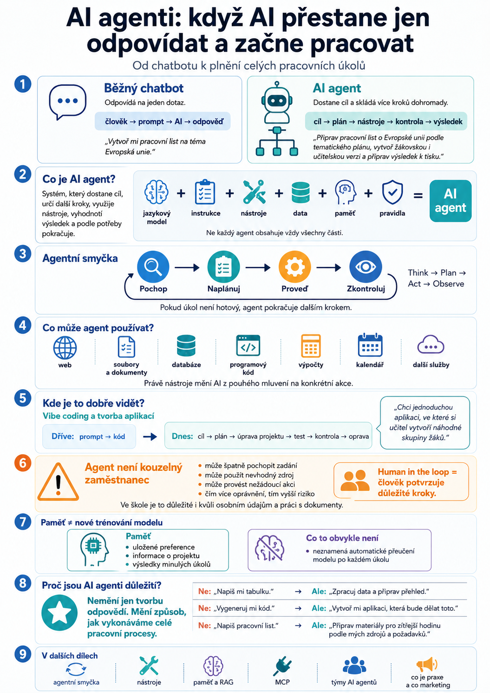

Ještě nedávno jsme umělou inteligenci používali hlavně jako chytrý chat. Položili jsme otázku, dostali odpověď a pokračovali další otázkou.
S nástupem AI agentů se ale způsob práce s umělou inteligencí mění. AI už nemusí pouze odpovídat. Může dostat cíl, naplánovat si postup, použít nástroje a postupně dojít k výsledku.

Od chatbotu k agentovi
Když otevřeme běžný AI chatbot, většinou funguje velmi jednoduše.
Napíšeme například:
„Vytvoř mi pracovní list na téma Evropská unie.“
AI vytvoří text pracovního listu a tím její úkol zpravidla končí.
To je klasický model práce:
U AI agenta může stejný úkol vypadat úplně jinak.
Můžeme mu například zadat:
„Připrav pracovní list o Evropské unii pro druhý ročník podle mého tematického plánu. Použij moje výukové materiály, vytvoř žákovskou a učitelskou verzi, zkontroluj obtížnost a připrav výsledek k tisku.“
To už není jedna otázka.
Je to cíl, ke kterému vede několik kroků.
Agent může nejprve zjistit, co se právě probírá. Potom vyhledat vhodné podklady. Připravit pracovní list. Vytvořit řešení. Zkontrolovat výstup a případně ho upravit.
Právě schopnost spojit několik kroků do jednoho pracovního procesu je jedním z hlavních rozdílů mezi běžným chatbotem a agentním systémem.
Co je AI agent?
Zjednodušeně můžeme říct:
AI agent je systém, který dostane určitý cíl, dokáže určit další kroky, využít dostupné nástroje, vyhodnotit jejich výsledky a podle potřeby pokračovat v práci.
Důležité je slovo systém.
AI agent totiž většinou není jen samotný jazykový model.
Jazykový model může být jeho „motor“, kolem kterého jsou další části.
Velmi zjednodušeně:
Ne každý agent přitom musí obsahovat úplně všechny tyto části.
Chatbot odpovídá. Agent se snaží splnit úkol.
Rozdíl lze ukázat na jednoduchém příkladu
Představme si, že chceme naplánovat výlet.
Chatbotu napíšeme:
„Kam bych mohl jet na tři dny do Rakouska?“
Dostaneme několik doporučení.
Agentovi ale můžeme zadat:
„Naplánuj mi třídenní cestu do Vídně v tomto termínu, najdi vhodné spojení, porovnej možnosti ubytování a připrav program podle míst, která mě zajímají.“
Pokud má agent přístup k potřebným nástrojům, může sám vyhledávat informace, porovnávat výsledky a sestavovat plán.
A právě tady začíná být agentní AI zajímavá.
Nejde totiž jen o generování textu.
Jde o vykonávání práce prostřednictvím několika navazujících kroků.
Jak agent pracuje
U agentních systémů se často používá takzvaná agentní smyčka.
Její základní princip můžeme popsat velmi jednoduše:
Agent nejprve vyhodnotí zadání. Potom rozhodne, co bude potřeba udělat. Provede určitou akci a podívá se na její výsledek.
Pokud úkol ještě není hotový, pokračuje dalším krokem.
V angličtině se často setkáme například se schématem:
Slovo think je ale potřeba chápat opatrně. Neznamená, že systém „myslí“ stejným způsobem jako člověk. Je to spíš praktická zkratka pro zpracování informací, rozhodování a volbu dalšího kroku.
Nástroje jsou to, co dává agentům „ruce“
Samotný jazykový model umí velmi dobře pracovat s jazykem.
Může psát, vysvětlovat, shrnovat, překládat nebo analyzovat text.
Jenže svět kolem nás se neskládá pouze z textu.
Aby mohl agent opravdu něco vykonat, potřebuje nástroje.
Podle konkrétního systému může například:
- vyhledávat na webu,
- pracovat se soubory a dokumenty,
- používat databáze,
- spouštět programový kód,
- provádět výpočty,
- pracovat s kalendářem,
- komunikovat s dalšími službami.
Právě zde se z AI, která pouze „mluví“, může stát AI, která je schopná provádět konkrétní akce.
A tady se potkávají AI agenti s vibe codingem
Velmi dobře je tento posun vidět při tvorbě aplikací.
Původní práce s generativní AI často vypadala takto:
„Napiš mi HTML kód jednoduché stránky.“
AI kód vytvořila a člověk ho někam vložil.
Vibe coding jde dál.
Člověk například popíše:
„Chci jednoduchou aplikaci, ve které si učitel vytvoří náhodné skupiny žáků.“
Coding agent může projekt prohlédnout, vytvořit potřebné soubory, napsat kód, spustit aplikaci, zjistit chybu, upravit kód a znovu výsledek otestovat.
Najednou tedy neprobíhá pouze:
ale spíše:
A to už je typický agentní způsob práce.
Proto spolu dnes pojmy vibe coding, coding agents a agentní AI velmi úzce souvisejí.
Agent ale není kouzelný zaměstnanec
Tady je potřeba trochu přibrzdit marketing.
Slovo „agent“ může znít, jako bychom AI předali úkol a ona si od té chvíle úplně se vším poradila sama.
Tak to není.
Agent může:
- udělat chybný závěr,
- použít nevhodný zdroj,
- špatně interpretovat zadání,
- provést nežádoucí akci.
Čím větší přístup k nástrojům dostane, tím důležitější jsou také bezpečnostní pravidla.
Je velký rozdíl mezi agentem, který vytvoří návrh pracovního listu, a agentem, který má například oprávnění odesílat e-maily, mazat soubory nebo měnit informace v databázi.
Proto se u důležitých operací používá princip human in the loop – člověk zůstává součástí procesu a některé kroky musí před provedením potvrdit.
Ve školním prostředí je to důležité dvojnásob, protože pracujeme také s osobními údaji a dokumenty, ke kterým nemůže mít libovolný AI systém automaticky přístup.
A co paměť a učení?
Kolem agentů se také často tvrdí, že si „pamatují zkušenosti a postupně se učí“.
To je poněkud zavádějící.
Agent se obvykle automaticky nepřeučuje po každém úkolu.
Často funguje spíše tak, že si určité informace uloží do externí paměti nebo databáze a při další práci si je znovu načte.
Může si tak například pamatovat preferovaný způsob práce, informace o projektu nebo výsledky předchozích úkolů.
To ale není totéž jako nové trénování samotného jazykového modelu.
Tento rozdíl budeme v dalších článcích ještě potřebovat.
Proč jsou AI agenti důležití
Generativní AI změnila způsob, jakým vytváříme obsah.
Agentní AI může změnit něco dalšího:
způsob, jakým vykonáváme celé pracovní procesy.
Místo zadávání jednotlivých promptů můžeme postupně přecházet k zadávání cílů.
Ale: „Zpracuj data a připrav přehled.“
Ne: „Vygeneruj mi kód.“
Ale: „Vytvoř mi aplikaci, která bude dělat toto.“
Ne: „Napiš pracovní list.“
Ale: „Připrav materiály pro zítřejší hodinu podle mých zdrojů a požadavků.“
Právě tento posun od jednotlivých odpovědí k celým pracovním postupům je podstatou současného rozvoje agentní AI.
Co bude následovat
V dalších dílech se podíváme pod kapotu.
Ukážeme si, jak funguje agentní smyčka, proč agent potřebuje nástroje, jak může pracovat s pamětí a vlastními zdroji pomocí RAG, k čemu slouží MCP a proč se začínají objevovat celé týmy spolupracujících AI agentů.
A hlavně si ukážeme, co z toho má skutečný praktický význam — a co je zatím spíš pěkně zabalený marketing.